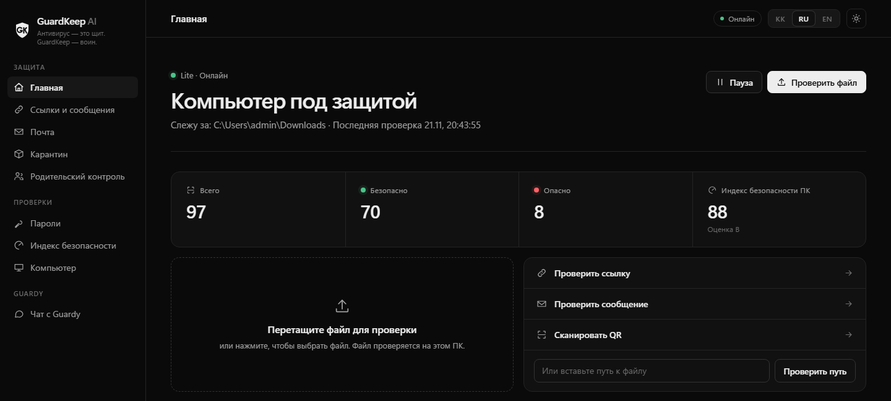

Antivirus is the shield.
GuardKeep is the warrior.
A privacy-first AI security agent for Windows. It unites Windows Defender, YARA, cloud reputation and our own machine-learning detectors in one fast cascade, and explains every verdict in Kazakh, Russian or English.
- Local-first files and passwords never leave the PC
- Built for Kazakhstan 44 local brands, kk / ru / en

GuardKeep in 56 seconds
Real screens of the working prototype: a fake Kaspi link, a Kazakh scam message, the engine cascade and parental control. Every number is measured or cited.
Online fraud keeps growing, and protection is scattered
internet-fraud cases recorded in Kazakhstan in 2025 [11]
online fraud growth in the first half of 2025: 9,936 → 12,390 cases [12]
Scattered tools
Antivirus, link checkers and password checkers are separate apps that ordinary users never combine.
Privacy gap
Cloud scanners see your files, so many people never check private documents at all.
Local scams
Fake Kaspi, Halyk and eGov pages written in Kazakh and Russian slip past generic filters.
One core, two cascades, many clients
GuardKeep does not replace antivirus: it makes existing engines and our own models work as one team, from the fastest check to the slowest.
- SHA-256 verdict cache
- YARA rules
- Windows Defender
- Our ML model (.exe / .dll)
- Office / PDF heuristics
- Cloud by hash (opt-in)
- ClamAV (on demand)
- Blacklists (URLhaus, OpenPhish, PhishTank)
- Our URL model (KZ brand look-alikes)
- Our text model (kk / ru / en)
our models optional / on demand
Malware model
Trained on the EMBER2024 benchmark [1]: 2,568 static features of Win32, Win64 and .NET files with a temporal train/test split. LightGBM [2] is compared with XGBoost [3]; thresholds are set at 1% and 0.1% false-positive rate; TreeSHAP [4] shows which features drove each verdict.
Phishing & scam model
32 URL features: edit distance to 44 Kazakh brands (Kaspi, Halyk, eGov …), homoglyphs and punycode, risky domain zones, domain age. Messages in Kazakh, Russian and mixed language: TF-IDF + logistic regression, then XLM-R [5] fine-tuning.
Guardy assistant
A cloud LLM through an OpenAI-compatible API, with fallback to a local model (llama.cpp). Guardy acts only through vetted tools; deleting or restoring a file always needs a user click. The LLM receives only the question and short verdicts.
Everything a family needs, in one place
Downloads guard
New downloads are scanned automatically; dangerous files go to a restorable quarantine.
Link, message & QR check
Paste a message, a link or scan a QR code: Guardy says if it is a scam and why.
PC security score
Defender, firewall, updates, BitLocker, autostart, passwords: 0–100 with a fix for each item.
Parental control
PIN lock enforced by the server, clipboard link guard, screen-time limit, Telegram alerts.
Mail protection
Opt-in IMAP check: links, attachments, look-alike senders, SPF / DKIM / DMARC.
Open core (MCP)
24 tools exposed through the Model Context Protocol [6]: any AI assistant can use them.
Works offline
Without internet all protection keeps working; only the cloud chat pauses.
Measured, not promised
Every number here comes from a real run. Hardware and settings are listed next to each result.
Performance on a budget laptop
Model metrics
The EMBER2024 authors' LightGBM baseline: the benchmark our training pipeline reproduces on the same feature set. This is not our result; it shows what the model class achieves.
What you will see at our table, in 60 seconds
- Fake Kaspi QRScan a QR code with a look-alike Kaspi link: GuardKeep blocks it and Guardy explains the trick.
- Test virus (EICAR)Download the harmless EICAR test file: a Windows alert, and the file goes to quarantine.
- “Why is it dangerous?”Ask Guardy: it answers in plain words, in Kazakh, Russian or English.
- PC security scoreA 0–100 score with a concrete fix for every weak point, plus parental control.
Built by students from Almaty
Secondary School No. 224, Almaty, Kazakhstan · Independent student research project
References
- Joyce R. J. et al. EMBER2024: A Benchmark Dataset for Holistic Evaluation of Malware Classifiers. KDD 2025. arXiv:2506.05074
- Ke G. et al. LightGBM: A Highly Efficient Gradient Boosting Decision Tree. NeurIPS 2017.
- Chen T., Guestrin C. XGBoost: A Scalable Tree Boosting System. KDD 2016.
- Lundberg S. M. et al. From local explanations to global understanding with explainable AI for trees. Nature Machine Intelligence, 2020.
- Conneau A. et al. Unsupervised Cross-lingual Representation Learning at Scale (XLM-R). ACL 2020.
- Model Context Protocol specification. modelcontextprotocol.io
- Wheeler D. L. zxcvbn: Low-Budget Password Strength Estimation. USENIX Security 2016.
- Have I Been Pwned: Pwned Passwords API (k-anonymity range search). haveibeenpwned.com/API/v3
- ReversingLabs YARA rules, MIT licence. github.com/reversinglabs/reversinglabs-yara-rules
- Phishing and malware URL feeds: abuse.ch URLhaus, OpenPhish, PhishTank.
- Prime Minister of the Republic of Kazakhstan, official site. Cyber Fraud in Kazakhstan Reduced by 40%, 5.9 Billion Tenge Restored to Victims. 12 Oct 2026. primeminister.kz
- Sakenova S. Online Fraud Surges Despite Overall Decline in Cases. The Astana Times, 21 Jul 2025. astanatimes.com